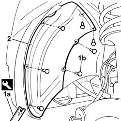

7055B64 LH OR RH REFLECTOR(ONE) ON REAR BUMPERS - R R
- Path
- Procedures > 70 FITTINGS > 7055 MOULDINGS ON PROTECTIONS > 7055B EXTERIOR PROTECTIONS > 7055B64 LH OR RH REFLECTOR(ONE) ON REAR BUMPERS - R R
- Kind
- repair procedure (removal / refitting; the operation number is the code)
- Applies to
- all engines; all production periods
- Interactive page
- https://sloeber94.github.io/elrnDB-fDct/en/#/244001540
Applies to: all engines; all production periods
 Removing
Removing
 Refitting
RefittingOp. 4450B10 TYRE INFLATION VALVE CAP - REPLACE
1. Remove the buttons (1b) retaining the dust seal using the tool (1a).
 | Description | Code | Function |
|---|---|---|---|
1a | Knife | 1.878.077.000 | Removing press-fittings |
2. Remove the dust seal from the wheel housing.

Applies to: all engines; all production periods
Refitting
Removing- Fit the dust seal in the wheel housing.
- Fasten the dust seal using the buttons.
Topics linked from this page (1)
Topics that link to this page (11)
- 1004B10 POWER UNIT WITH MANUAL GEARBOX - R + R
- 1004B12 POWER UNIT WITH MANUAL GEARBOX - R+R FOR VERSIONS WITH A/C
- 1088B24 ENGINE COOLING RADIATOR - R R FOR AIR CONDITIONED VERSIONS
- 5040A40 AIR CONDITIONER CONDENSER - R+R
- 5040A50 PIPE FROM COMPRESSOR TO AIR CONDITIONER CONDENSER - R+R
- 5040A52 PIPE FROM CONDENSER TO DEHYDRATING FILTER - R+R
- 5050A10 WINDSCREEN WASHER FLUID RESERVOIR (IN ENGINE BAY) - R+R
- 5050B34 WINDSCREEN WIPER ARM/S COMPLETE WITH BLADE - R+R
- 7005A24 FRONT SIDE DOOR R R
- 7210E10 R.R. FRONT BUMPER
- 7210E18 R.R. FRONT WING